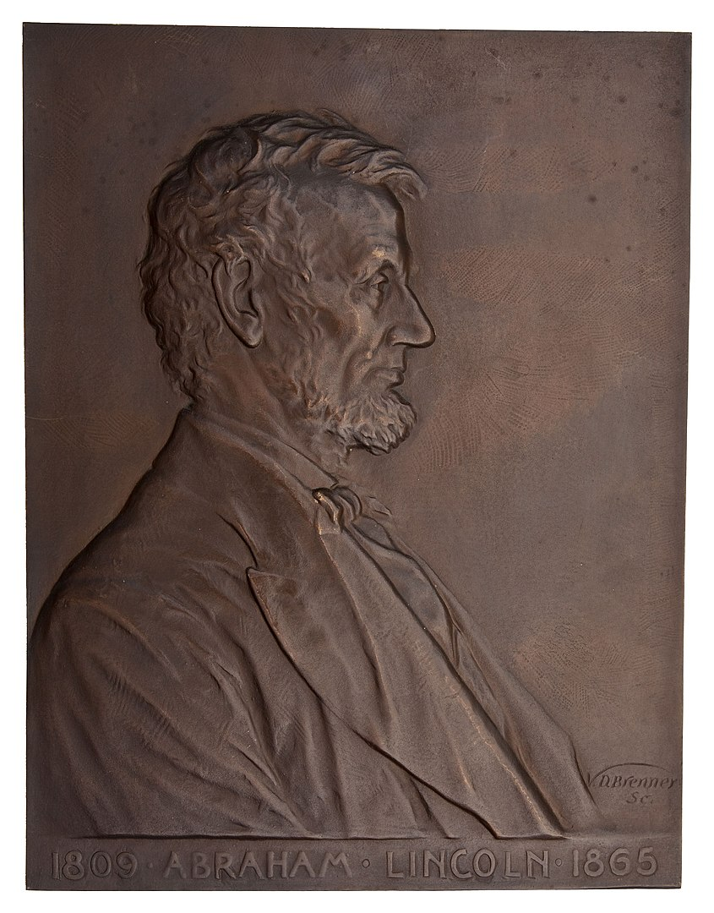

The Lincoln cent (sometimes called the Lincoln penny) is a one-cent coin that has been struck by the United States Mint since 1909. The obverse or heads side was designed by Victor David Brenner, as was the original reverse, depicting two stalks of wheat (thus "wheat pennies", struck 1909–1958). The coin has seen several reverse, or tails, designs and now bears one by Lyndall Bass depicting a Union shield. All coins struck by the United States government with a value of 1/100 of a dollar are called cents because the United States has always minted coins using decimals. The penny nickname is a carryover from the coins struck in England, which went to decimals for coins in 1971.
In 1905, sculptor Augustus Saint-Gaudens was hired by the Mint to redesign the cent and the four gold coins, which did not require congressional approval. Two of Saint-Gaudens's proposed designs for the cent were eventually adapted for the gold pieces, but Saint-Gaudens died in August 1907 before submitting additional designs for the cent. In January 1909, the Mint engaged Brenner to design a cent depicting the late president Abraham Lincoln, 1909 being the centennial year of his birth. It was the first widely circulating design of a U.S. president on a coin, an idea that had been seen as too monarchical in the past, namely by George Washington. Nevertheless, Brenner's design was eventually approved, and the new coins were issued to great public interest on August 2, 1909.
Brenner's initials (VDB), on the reverse at its base, were deemed too prominent once the coins were issued, and were removed within days of the release. The initials were restored, this time smaller, on Lincoln's shoulder, in 1918. Originally struck in 95% copper, the cent coin was changed for one year to steel in 1943 as copper was needed to aid in the war effort. The mint then reverted to 95% copper until 1982, when inflation made copper too expensive and the composition was changed to zinc with an outer copper layer. Brenner's wheat reverse was replaced in 1959 by a depiction of the Lincoln Memorial designed by Frank Gasparro, for the sesquicentennial of his birth year. The Lincoln Memorial reverse was itself replaced in 2009 by four commemorative designs marking the bicentennial of Lincoln's birth. Beginning in 2010, Bass's shield design was coined.
In 1904, President Theodore Roosevelt wrote to his Secretary of the Treasury, Leslie Mortier Shaw, complaining that U.S. coinage lacked artistic merit, and enquiring if it would be possible to engage a private artist, such as sculptor Augustus Saint-Gaudens, to prepare new coin designs.[2] At Roosevelt's instructions, the Mint hired Saint-Gaudens to redesign the cent and the four gold pieces: the double eagle ($20), eagle ($10), half eagle ($5), and quarter eagle ($2.50). As the designs of those pieces had remained the same for 25 years, they could be changed without an act of Congress.[3] The Indian Head cent, which the Lincoln cent replaced, had been introduced in 1859.[4]
Saint-Gaudens originally conceived a flying eagle design for the cent,[5] but at Roosevelt's request, developed it for the double eagle after learning that by law, an eagle could not appear on the cent.[6] Writer and friend Witter Bynner recalled that in January 1907, Saint-Gaudens was seriously ill with cancer, and was carried to his studio for ten minutes a day to critique the work of his assistants on current projects, including the cent. Saint-Gaudens sent Roosevelt a design in February for the obverse of the cent showing a figure of Liberty. Roosevelt suggested the addition of a Native American war bonnet, stating, "I don't see why we should not have a conventional head-dress of purely American type for the Liberty figure."[7] In May 1907, Roosevelt instructed that the Indian design be developed for the eagles instead. Saint-Gaudens was by then in declining health; he died on August 3, 1907, without having submitted another design for the cent.[3]
With the redesign of the four gold denominations completed by 1908, Roosevelt turned his attention to the cent. The centennial of the birth of assassinated president Abraham Lincoln would occur in February 1909, and large numbers of privately manufactured souvenirs were already being issued. Many citizens had written to the Treasury Department, proposing a Lincoln coin, and Roosevelt was interested in honoring his fellow Republican. This was a break with previous American numismatic tradition; before the Lincoln cent, no regularly circulating U.S. coin had featured an actual person (as opposed to idealized personifications, as of "liberty").[8] Many writers had suggested a Lincoln half dollar, but that coin's design had been changed in 1892 and could not yet be altered without congressional approval. By then a lame duck in office, Roosevelt was reluctant to involve Congress.[9]
Brenner's obverse design closely follows a profile of Lincoln he had used in other work, such as the desk plaque he made for the Gorham Manufacturing Company in 1907. Numismatic historian Roger Burdette suggests that Brenner based his work on an 1864 photograph of Lincoln taken at Mathew Brady's studio by one of his assistants. However, Burdette adds that in an April 1, 1909 letter, Brenner mentioned that in producing the design, he envisioned Lincoln reading to a child, when the sculptor felt Lincoln would be at his brightest. This suggests that Brenner may have drawn inspiration from the well-known Brady photograph of Lincoln with his son, Tad.[a] In a 2012 study published in Coin World, numismatic historian Fred Reed suggests that Brenner's Lincoln work was based on a Brady portrait of Lincoln in right profile which was taken on the same day as the picture with his son (there were several photos taken at this sitting).[12] As the photograph in question only showed Lincoln's head and shoulders, Reed indicates that Brenner obtained additional detail from an 1860 campaign photograph of a beardless Lincoln.[13]
On January 18, 1909, Brenner submitted models to the Mint with a Lincoln profile on the obverse, and a reverse design very similar to that on the then-current French silver coins, showing a tree branch. He also proposed designs for a Lincoln half dollar, with the late president to appear on one side, and a standing Liberty design—almost identical to the obverse of the same French coins. Leach replied on February 2 that no change to the half dollar could be made without congressional approval. By February 9, Leach had discovered the origin of the branch design—although numismatic historian Don Taxay notes that it is odd Leach had not discovered the source of the standing Liberty design, given that they were on opposite sides of the same French coins.[14] Leach did not confront the sculptor with the artistic borrowing, but instead simply ruled out the submitted designs as unsuitable for the reverse of the cent.[14] He urged the sculptor to prepare a simple design, bearing the denomination, the country's name, and the motto "E pluribus unum".[15] Brenner worked quickly, and on February 17, delivered models for both obverse and reverse similar to the eventual coin, though with a somewhat larger bust of Lincoln, and the motto "In God We Trust" omitted.[16] As a design element on the reverse, Brenner used two ears of durum wheat.[17] The designs were shown to President Roosevelt, who approved them although Roosevelt required "UNITED", which Brenner had spelled "VNITED", to be spelled in the conventional way.[18] After Leach examined the models, he objected to the fact that Brenner had put his full surname on the obverse. Brenner wrote in return, "I shall take it out and put it in small letters on the reverse."[16]
On March 4, 1909, the day on which Roosevelt left office, replaced by William Howard Taft, Brenner met with Mint Engraver Charles E. Barber in Philadelphia. Barber had written to Leach, suggesting that Brenner's designs would have to be modified to be suitable for coinage.[19] On March 15, Brenner wrote to Leach stating that Barber seemed in no hurry to have the new coins produced.[20] Brenner also complained that the Mint was losing detail as it reduced the large models to coin-sized hubs. Barber had been stung by criticism that he had lost detail in this way with the new gold coins, and he raised no objection to having the reductions done by an outside silversmith.[21] After several hubs were prepared by the Medallic Art Company of New York, Barber sank a master die and sent it to Brenner for retouching.[22]
Patterns were prepared from the dies, but Barber and Leach were unhappy with the pieces. On May 22, Leach wrote to Brenner, I have to inform you that I was not satisfied with the first proof of the Lincoln cent. I found that you had not dropped the Lincoln portrait down so that the head would come nearer the center of the coin ... Therefore I had Mr. Barber make me a proof of this change, and as this left so much blank space over the top we concluded that it would be better to put on the motto, "In God We Trust". This change has made a marked improvement in the appearance of the coin.[23]
On May 26, samples of the new coin with and without the motto were shown to President Taft, who selected the mottoed version.[24] The coin was formally approved by Secretary of the Treasury Franklin MacVeagh on July 14 and a release date of August 2, 1909, was set.[22]